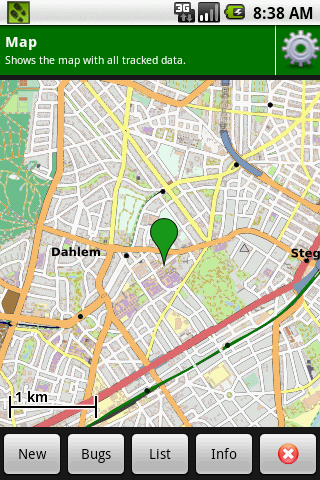
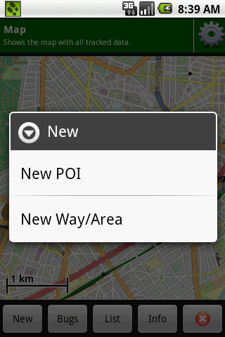
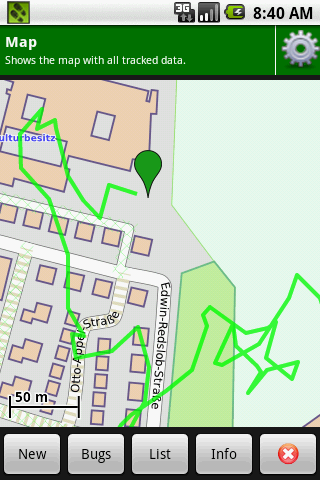
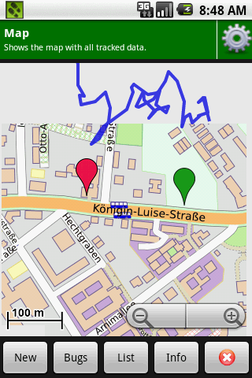
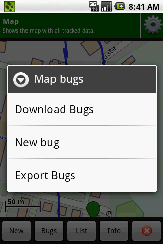
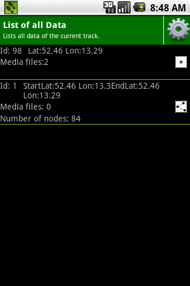
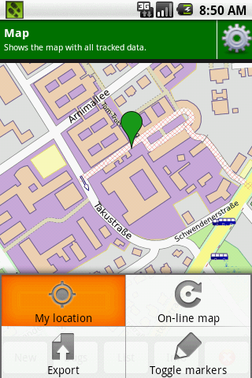

Here, you can see a map showing your current location as well as recorded items in your track. Starting a track and registering points of interest are possible in this view, as well.
Upon acquiring the first GPS fix, your location on the map is shown as a green marker.
By tapping on the map, you can zoom in and zoom out using the keys in the lower right corner.
By clicking on "New" a dialog appears that asks you what sort of data you want to record:
"New POI" will add a single point of interest.
"New Way/Area" starts a new Way or Area. The new way/area is marked on the map as green line:
When a way/area is recorded the dialog opened with the "New"-button will let you end or edit the way.
A recorded POI is marked as a red marker. On the following screenshot you also see a finished way as a blue line:
TraceBook lets you also record Bugs. Bugs are errors in the OpenStreetMap. They serve as a note, so that you know later where you want to correct errors. Additionally TraceBook will show Bugs that are recorded in OpenStreetBugs.
"Download bugs" will download the OpenStreetBugs-Bugs. "New Bug" will add a new Bug at the current position (if you do not have a GPS fix the center of the map is regarded as the current position). "Export Bugs" will export all of your recorded Bugs to an OSM-XML-file. You can import them to JOSM as a layer.
The List-Button will lead you to a list of all map data recorded. A long click on a list item will give you a dialog to edit the data.
The Info-Button will lead to a screen that summarizes this track. You can add a comment for this track, rename the track and export it. A TBT-File is then created in the directory /sd-card/TraceBook/
The rightmost button in the map will end the track.
The map has an options menu:
"Online-Map" will switch between the online and offline map. "Export" will export the track as described above. "My location" will center the map on the current position. "Toggle markers" will enable or disable the markers for all way points.
If you want to use the offline map, you have to manually install the map-file. The .map-file can be downloaded for example here.
Place the map on the sd-card of your device.
Then chose the map file using the filepicker you can find in the preference menu of TraceBook. You can access the preference menu by clicking on the gear button on the status bar.